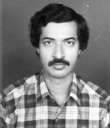

WEEKEND THOUGHTS # 9

Dear Ornetters,
All these so called research subjects always puzzled me. I mean how exactly does it make my life easier if someone "develops a model on unstable wetting front progress in unsaturated porous media"!!! But I guess somehow it does. I think it was not really that apparent when Galleleo discovered that it's the earth which goes around sun and not the other way. It'd probably have been lot difficult to venture into space with the old assumption. And it must not have been the idea of light, heating, ovens, refirgerators, toasters, computers, tv, radio and a billion other gazettes which would've inspired Ben Franklin to discover electricity. He discovered it anyway and today we just take it for granted like the freedom of speech as our birth-right. So it does not matter if I don't understand the head or tail of it, I sure have a lot of respect for all the scientists and researchers and for whatever they are searching or re-searching.
That's the reason when I received this article from Sukanta Dash on "Heat Loss from a Feeding Bottle using Algebraic Flux Model and CFD" I promptly forwarded it to some of the other like-minded members of our Ornet community to analyze the article. Oh no; I am just joking! That's not the real title of the article. I had the good fortune of knowing Sukanta Bhai(alias Sukanta Dash, the author) from his IITKGP days.He is a great scientist, very passionate about his research and a very friendly and likeable personality; To me, personally, he was a teacher, mentor and an elder brother. I am particularly proud to present this international edition of WT column to feature the first contribution from India.
And the article! It's a beautiful story, a true story, humorous and scientific (is that possible!) I am sure you'll enjoy it. Read on for the reviews at the end of the article and send us your reviews.
With regards,
Surjit Sahoo April 05, 1996
(ssahoo@ingr.com)
Huntsville, Alabama
The author Sukanta K. Dash (Age:35) was born in Sundargram, of Cuttack District and had done his schooling in Ravenshaw Collegiate School. After completing his I.Sc from Ravenshaw college he did his B.Tech and Ph.D in Mech. Engg from IIT, Kharagpur and subsequently did post-doctoral research work in natural convection Turbulent flow as a Humboldt Fellow in Germany. He was a scientist in the CSIR/CMERI for about 3 years and now he is in TISCO as a Research Scientist.
Teaching Science to my Wife
It was a hot summer afternoon.I suddenly rushed into my house and found Nimi going thru the newspaper sitting on the dining chair. Just seeing her I could not control my feelings and from my mouth it came out,"Oh a great day for me". She asked what happened. In reply I told one of my funniest papers has been accepted in a great journal. You do not know the topic of that paper. Let me tell you.
Heat transfer from a baby feeding bottle (filled with hot milk up to the brim) with or without the cap, fitted with the nipple, while the bottle is being vigorously stirred in a bucket of water.
Nimi laughed a lot listening to my topic of research and told me, "A scientist like you is doing this kind of research and wasting Government's money. What is the value of this research? Above all the referees in your great journals are also stupid people who have recommended your topic to be published".
I explained Nimi. "See it has lot of academic values as well as many women can learn how to cool their baby's feeding bottle quickly when the baby is crying in hunger. So the topic has lot of social values and how can you just ignore the work of a great scientist who has used world's most up-to-date CFD model and software in order to arrive at his conclusions".
Nimi did not appreciate the author's labour and his scientific finding. She is of the opinion that a feeding bottle can be effect- ively cooled by keeping the cap open and stirring it in a bucket of water gently (because vigorous stirring can bring in the water from the bucket in to the bottle). She believes heat loss from the milk in the bottle takes place thru the opening only and convective cooling at the side of the bottle has very little role on effective cooling of the milk.
I had explained her the physics of the problem 5 years ago when our son was 6 months old. She was furious with me that night when see discovered that I was using this practice to cool the bottle while the baby was crying on the bed. With anger she had told me, "when will you appreciate simple physics I do not know and I understand now why my son used to cry for a long time when I ask you to prepare the feeding bottle".
That night's incident had given me the recipe for a computational work on baby feeding bottle. Putting all types of heat loss mode from the bottle with the most sophisticated turbulent model (e.g. radiation from the mouth of the bottle when the cap is open along with natural or mixed convection, a highly prevailing turbulent flow in the bucket as well as in the milk using the most advanced full stress model and an algebraic flux model of heat transfer from the milk and also in the water with conjugate heat transfer in order to account for the conduction heat transfer in the wall of the bottle) I set up the problem in a very advanced machine and it took about 4 years to complete the research work. My finding still supports my earlier feeling that the milk can be quickly cooled in the feeding bottle when vigorously stirred in a bucket of water with the cap closed. Although the cap-open situation will enhance the heat transfer from the milk in similar conditions like a cap-close situation but this does not become practically feasible. The CFD model predicts the infeasibility of the situation because water rushes into the bottle.
So violent convective cooling at the side wall of the bottle is more effective than a mild convective cooling plus mixed convection and radiation loss from the bottle mouth. This was my conclusion to be precise.
With these findings a set of international referees could be convinced and my scholar could get a Ph.D degree but until now I am unable to convince Nimi, my dear wife. But life became lot more simple for me because I did not have to cool the feeding bottle anymore since she discovered my way of cooling from that night.
(Sukanta K. Dash)
R & D Division
TISCO, Jamshedpur
India.
This article is a very interesting. It describes a cross-section of a researcher's life and his feelings on convincing his wife the science behind a common phenomenon on which the researcher has done extensive research. The author has nicely personalized this small story around him and his family with good blend of humor and seriousness. This story conveys the underlying message on how, in my cases, the academic values and significance of research work are not well appreciated by other people (people not belonging to this research community). Thus, it reinforces the fact that different people have different perspectives to look at the same thing. IN ORIYA WE SAY "AMA GAAN RA GAI BACHHURI, TAMA GAAN RA KANSA BASAN". That is natural, can happen and one does not have any control over it.
In summary, this article is very interesting and I hope people will enjoy reading this.
(* The opinion expressed above are my personal opinion and may vary from others *)
The article reminds me of Newton's apple. It reflects the author's work of a remarkable research findings of a familiar phenomenon in a humorous but controversial manner. The presentation style is quite entertaining. However, the title of the article attracts controversy. It gave me the feeling that, in general, women do not want to follow the deeper levels of scientific discoveries (oops). True? Well, psychologists (although I do not belong to this category) are of the opinion that, customarily, men are rule-oriented and women are belief-oriented. To substantiate the statement, let me point out a common event: while trying to find out the road to reach someone's house, men generally would struggle to resolve the direction applying the rules to determine north/south etc., but women can easily recall a land mark (which they might have noticed during a prior visit) and prove themselves to be correct. Well, let me not start a war on this.
So what do I think of the article? It is scientific, convincing, iteresting, and well-presented. It offers a different flavor which I enjoyed truly, and I hope you like it too.
The author apparently falls into spend-as-little-time-in-the-kitchen syndrome. The right way the mothers will do would be to cool the milk before pouring into the bottle. The feeding bottle is designed to retain the warmth in the fluid such that the baby enjoys the food through his/her slow sucking. The author obviously falls into problem when he pours hot milk and is stuck with it in spite of the baby's strenuous vocal objections. My first advice is that he should only pour lukewarm milk into the bottle. By allowing some radiation cooling through the open end, mothers make sure that the initial feed is comfortable to the baby. If not, the baby would reject the bottle completely and one has a bigger problem. At the same time, mothers don't wish to give cool milk, because it doesn't digest well.
So much about parenting. Most fathers would heat the milk and would not wait to cool it down. They can never make yogurt at home! In the baby bottle case, there could be a simpler trick, i.e., to put the botle under running cold water. This would enhance conduction and would be the most efficient cooling mechanism given the unescapable syndrome.
To get ideas on heat loss, turbulent flows, diffusion, convection, radiation and conduction from the baby's feeding bottle is remarkable indeed. To convince Nimi about the efficiency of different mechanisms through calculations is to reinforce one's self-esteem to a person who has known better since marriage! Heatloss through the glass is a neat problem in material science and discovering the efficiency of cooling causes joy in the world! The next experiment is to take a full bucket of water and see if the bottle sinks when the milk gets cool. Let this be done only after the baby is fed.. Other variations of these experiments exist.
Nimi does not know physics, but has discovered what's good for the baby. The baby starts the uproar as soon as he/she learns that the father is in charge of feeding. The father believes that it is his job to do an experiment rather than feeding. ( Because men fall into such traps, God did create women and gave them the right of nurturing children!) Nimi will first cool the milk in the kitchen and then pour in the bottle while lukewarm and allow some heat loss by opening the top cap such that the feed is soothing to the baby and the remainder cools slowly.
It was nice for the author to express his pleasure of discovery and explaining it to his wife. Knowledge is the key of operating in the technological world to understand empirical methods such as why rice is added to boling water for proper cooking or why you need an earthenware vessel to cook the best rice in the world..
Your comments are always welcome...

 Sukanta K. Dash
Sukanta K. Dash

Ride back to Home Page...
![[IMAGE]](../../wt/rath.gif)